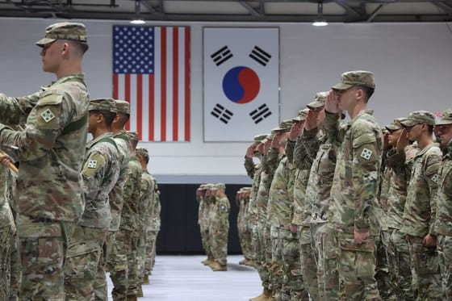

世界苦茶05月24日新闻 | 34条 | 特朗普威胁欧盟与苹果三星加税

特朗普威胁欧盟与苹果三星加税 | 驻韩美军拟减少4500人引发震荡 | 哈佛招生权或联邦法院保护 | 日本制铁获准收购美钢
每天三件事：
苦茶数据
美元兑人民币：7.17（昨日7.19，前日7.20）
美元兑日元：142.63（昨日143.48，前日143.02）
上证指数：休市（昨日3348，前日3379）
标普500指数：休市（昨日5802，前日5842）
比特币：107828（昨日110840，前日111047）
布伦特原油：64.78（昨日64.02，前日64.29）
中国新闻
• 中德领导人通话合作 ：中国国家主席习近平和德国总理默茨通话时，呼吁两国夯实政治互信，巩固两国关系政治基础，并表示希望德国为两国双向投资合作提供更多政策支持和便利。据新华社报道，习近平星期五下午应约同默茨通电话，再次祝贺默茨就任德国总理。习近平说，当今世界百年变局加速演进，国际形势变乱交织，中德、中欧关系的战略性、全局性意义更加凸显，健康稳定的中德关系符合两国利益，也符合中欧各界期待。
• 中越列车恢复通行 ：受冠病疫情影响停运五年，中越国际旅客列车将于本星期天恢复运行。综合澎湃新闻和越通社报道，中国铁路南宁局集团有限公司星期五受询时称，经中越两国铁路部门等联合推动，自2025年5月25日起，中国北京西、南宁至越南河内嘉林站间国际旅客列车恢复开行，为促进中越两国人员往来、经贸合作和人文交流提供运输保障。据了解，届时每天将有两趟列车，往返于越南河内嘉林站与中国南宁站之间。恢复开行的南宁站至河内嘉林站间国际旅客列车每天下午6时05分从南宁站始发，次日上午6时30分抵达河内嘉林站；从河内嘉林站至南宁站间国际旅客列车每晚10时20分从嘉林站始发，次日上午10时06分抵达南宁站。
• 和歌山四熊猫将归华 ：日本和歌山县的四只大熊猫，将在6月28日全部返华。归还之后，日本国内饲养的大熊猫将仅剩东京上野动物园的两只。据日本共同社报道，和歌山县白滨町娱乐设施“冒险世界”星期五敲定，归还中国的所有四只雌性大熊猫将在6月28日从日本出发。将被归还的是24岁的良滨以及它的三个孩子，分别是八岁的结滨、六岁的彩滨和四岁的枫滨。由于需要进入检疫期，它们在室外运动场的展示到星期天就会结束。
• 中国游客重返日榜首 ：日本樱花季旅游需求强劲，4月访日旅客数量超过390万人，其中中国游客的人数最多，达到76万5100人，同比增加43.4%，创下4月单月最高纪录，也是三个月以来首次重回榜首。综合日本放送协会（NHK）和日经中文网报道，日本国家旅游局星期三发布的数据显示，4月访问日本的外国旅客人数同比增加28.5%，达到390万8900人，刷新今年1月的纪录，再次创下单月历史新高。报道称，这主要得益于樱花季赴日旅游需求强劲等因素。从国家和地区来看，4月访日游客人数最多的是中国大陆，达到76万5100人。受各地增加航班的积极影响，人数比去年同期增加43.4％，创下4月单月最高纪录，同时也是三个月来首次重返榜首
• 江西检方认罪认罚率达100% ：中国江西省庐山市检察院称，该院今年加大认罪认罚工作力度，教育引导犯罪嫌疑人认罪认罚，适用率已由去年的87.84%提升至100%，引发质疑。庐山市检察院4月10日在官网发文称，该院今年以来加大认罪认罚工作力度，适用率稳步提高，由2024年的87.84%提升至100%。在审查逮捕、起诉时，同步开展认罪认罚告知制度，教育引导犯罪嫌疑人真诚认罪悔罪，确保认罪认罚自愿真实合法。文章称，该院积极落实认罪认罚从宽制度主导责任，强化与公安、法院的协调沟通，引导公安机关在侦查阶段完成退赔退赃、得到被害人谅解等相关手续，为适用认罪认罚从宽制度打好基础、提高效率。同时，与司法局、律所构建良性互动机制，做到值班律师、辩护人全程参与见证，保障认罪认罚的自愿性和合法性。 （翻評：怎麼TM可能呢？！肯定是靠威脅和刑訊逼供的。）
• 整治远洋执法涉案3亿 ：为整治“远洋捕捞”这类针对企业的趋利性异地执法等行为，中国自3月起开展专项行动规范涉企执法。官方通报，整治问题涉案金额逾3亿元人民币，为企业挽回损失近1亿元。受访学者指出，随着中国高层持续释放优化营商环境的信号，民营企业信心较往年已有所提振。但也有专家直言，官方通报的涉案金额可能不及企业家实际面临的损失，对于专项行动能否持续深入、执法行为能否真正受到规范，疑虑仍存。这项专项行动最早在去年12月的中共中央经济工作会议上提出，今年3月在全国范围内全面推开。
亚太印太新闻
• 菲总统更换外交部长 ：菲律宾总统小马可斯更换外交部长，一名高级官员说，经济团队成员则维持不变。据总统府星期五的简报，外交部长恩里克·马纳洛将于7月31日起由副部长特蕾莎·拉扎罗接替。马纳洛将出任菲律宾常驻联合国代表。
• 王金平支持卢秀燕参选 ：台湾前立法院长王金平表示，如果台中市长卢秀燕决定参选国民党主席，他将给予支持。综合台湾《太报》和中评社报道，王金平星期五以荣誉教授身份到东海大学演讲。他受访时提到，尊重孙文学校总校长张亚中要参选国民党主席，但在张亚中星期四前去拜会时，他已明确告知对方，“如果卢秀燕要选党主席，我会支持她”。王金平也表示，这次到台中讲课，未安排与卢秀燕会面。 （翻評：看來下一屆國民黨總統候選就是盧秀燕+蔣萬安了，還是很有競爭力的。）
• 印尼退将任海关引争议 ：印度尼西亚财政部长慕燕妮星期五宣布任命退役中将贾卡为海关与消费税部门负责人。路透社报道，贾卡此前因绑架维权人士而被定罪。人权活动人士对贾卡的任命表示担忧，部分原因是在他出席就职仪式前，许多人认为他是一个现役军官。根据印尼法律，军人被禁止担任某些文职职位，包括财政部的职位。
• 五角大楼考虑从韩国撤军4500人： 一份来自美国的报告引起了轰动，称美国总统唐纳德·特朗普政府正在审议一项从韩国撤回数千名美军并将其重新部署到印太地区其他地方的计划。虽然据说这个想法只是美国高级官员讨论的几个方案之一，但它引起了关注，因为这与美国国内关于扩大驻韩美军战略灵活性的日益激烈的辩论不谋而合。《华尔街日报》周四报道称，引用国防官员的话，五角大楼正在制定的一个选项是"撤出大约4500名士兵，将他们转移到印太地区的其他地点，包括关岛"。这些想法正在作为"处理朝鲜问题的非正式政策审查的一部分"进行准备。然而，该提案似乎尚未直接提交给特朗普，仍然是审查政策的高级官员讨论的几个概念之一。据《华尔街日报》报道，五角大楼发言人在被问及关于减少驻军讨论时表示，"没有政策公告要发布"。国家安全委员会发言人皮特·阮没有直接谈论撤军问题，但表示朝鲜的"完全无核化"仍然是特朗普的承诺。
• 韩美否认撤军讨论 ：韩国国防部星期五就美国媒体有关五角大楼考虑从韩国撤出约4500名美军的报道表示，韩美从未讨论驻韩美军撤离相关事宜。韩联社报道，韩国国防部说，驻韩美军是韩美同盟的核心战力，与韩军坚定不移地保持联合防卫态势，遏制朝鲜侵略和挑衅行为，为维护朝鲜半岛和地区的和平与稳定做出贡献。韩国国防部今后也将与美方保持合作，推动韩美同盟继续向前发展。《华尔街日报》22日报道，美国国防部正在酝酿将约4500名驻韩美军官兵转移至关岛等印太地区的方案。美国国防部发言人在回应韩联社的询问时仅说，当天没有信息发布。 （翻評：和這兒個基本是在給李在明助選嗎？但比較難說，這是否會對支持與美談判的候選人產生有利因素呢？）
• 李在明支持率领先 ：最新民调结果显示韩国最大在野党共同民主党总统候选人李在明以45%的支持率继续领跑，执政党国民力量党候选人金文洙和改革新党候选人李俊锡的支持率，分别为36%和10%。韩联社报道，根据民调机构韩国盖洛普星期五发布的民调结果，与上一次调查相比，李在明的支持率下滑了6个百分点，金文洙和李俊锡则分别上升7个百分点和2个百分点。政党支持率方面，共同民主党为42%，较前一次调查下滑6个百分点；国民力量党上升6个百分点至36%；改革新党为6%。
科技新闻
• 英研发两小时脑瘤诊断 ：英国研究人员新开发出一种超快速脑肿瘤基因诊断方法，可以将脑肿瘤的诊断时间从此前的六至八周缩短至两个小时。新华社引述研究组在新一期美国《神经肿瘤学杂志》上发表的论文说，他们这种脑肿瘤基因诊断方法由英国诺丁汉大学等机构的研究人员和临床医生共同开发。这种方法基于牛津纳米孔技术公司的便携式测序设备，可更快检测人类基因相关区域，并可同时测序多个DNA区域，从而加快整个检测流程。
• OpenAI高层将访亚洲 ：美国“开放人工智能研究中心”正在亚太地区寻找未来的数据中心站点，匿名知情人士透露，OpenAI首席战略官下周到日本、韩国、澳大利亚、印度、新加坡访问。彭博社报道，OpenAI刚与阿拉伯联合酋长国签署合作协议，协助阿布扎比打造一个大型数据中心项目，而亚太地区是全球拥有最多数据中心的地区，美国谷歌母公司Alphabet Inc、微软和脸书母公司Meta都制定了扩容计划。
• 越南因非法内容采取措施封锁Telegram应用： 越南当局已指示当地电信和互联网服务提供商在该国封锁Telegram即时通讯应用，原因是据称该应用未能阻止其用户传播非法内容和进行反政府活动。越南政府官网上的声明援引公安部的数据称，越南大多数Telegram群组都包含监管机构所称的 “有害” 信息，包括被指控传播反政府内容以及诈骗、出售用户数据和贩毒等犯罪行为的群组。上述声明称，Telegram必须遵守越南法规，包括按照当局要求监控、删除和防止违法内容。声明称，该通讯应用还被指控未能按照法律要求向越南当局注册其电信服务业务。 （翻評：學中國別學這方面啊。）
财经新闻
• 特朗普拟对三星加税 ：美国总统特朗普将他对美国智能手机巨头苹果公司的关税威胁，扩大至韩国三星电子公司和其他智能手机生产商。彭博社报道，特朗普星期五表示，针对苹果公司征收的关税也将包括三星等更广泛的手机生产商，以促使它们将产品制造转移到美国。当天早些时候，特朗普在社交媒体Truth Social发文说，凡是在其他国家制造并在美国销售的苹果手机，应该面临至少25%的关税。
• 台积电警告美方征税 ：针对美国商务部半导体关税调查，来自台湾的半导体龙头台积电5月初在意见函中警告，若美方执意对晶片征收进口关税，将影响亚利桑那州投资计划。受访的台湾产业咨询专家认为，台湾应该运用这一点作为对美谈判策略。美国商务部4月起依据1962年美国联邦《贸易扩张法案》（Trade Expansion Act）第232条规范，针对进口半导体与相关制造设备的行为，是否对国家安全构成威胁一事展开调查，范围涵盖晶片、半导体制造设备零件、下游衍生产品等，关税细节尚未出炉。美国多家科技新闻网站星期四报道，针对上述调查，台积电亚利桑那子公司已于5月初致函提交意见，其中以强烈措词警告特朗普政府，若执意对晶片征收进口关税，可能影响台积电在亚利桑那州总计1650亿美元的投资时程表。
• 碧桂园债务重组获支持 ：中国房企碧桂园公布，债务解决和重组方案已获七成债权人支持。综合每日经济新闻和澎湃新闻报道，碧桂园在港交所网站公布，截至星期五，已有持超过70%现有公众票据本金的债权人签署加入重组支持协议。碧桂园同时宣布延长协议签署的同意费用截止时间，其中“早鸟”阶段的截止日期从5月23日下午5时延长至6月6日下午5时，一般重组支持协议同意费用限期由6月6日下午5时延长至6月20日下午5时。
• 日本核心物价持续上涨 ：受大米等食品价格大幅上涨影响，今年4月日本去除生鲜食品后的核心消费价格指数同比上升3.5%至110.9，连续44个月同比上涨。新华社引述日本总务省星期五发布的数据说，4月大米类价格同比上涨98.4%，连续七个月刷新历史最大涨幅。日本民众日常食谱中常见的饭团价格同比上涨18.1%。此外，4月能源价格同比上涨9.3%，进一步推高物价。其中，电费上涨13.5%，汽油价格上涨6.6%。 （翻評：日本幾乎正式走出30年通縮，不過這個通脹能夠控制住嗎？）
• 印尼央行年内第二次降息 ：印度尼西亚中央银行宣布降息25个基点，以扶持经济应对关税不确定性和外部环境不明朗的影响。印尼央行星期三宣布将基准利率下调25个基点至5.5%，是今年来第二次降息。由于通胀缓和，加上印尼盾汇率回稳，分析普遍预期印尼在下半年还有空间再降息一至两次。印尼央行行长佩里周三在记者会上说，降息决策是为了推动经济持续增长。
• 特朗普拟对欧征50%关税 ：特朗普5月23日清晨发文：一、我很早就告诉了蒂姆·库克，希望美国销售的iPhone都在美国生产，而不是在印度或其他地方；否则的话，苹果就要给美国交至少25%关税。二、欧盟很难打交道，欧盟成立的主要目的就是在贸易上占美国便宜。他们设贸易壁垒、增值税、行政罚款、货币操纵、对美企法律战，形成对美2.5亿美元年顺差。与欧盟的磋商没有进展，建议自6月1日起对欧盟征收50%关税。 （翻評：不和中國打，和歐盟打。）
• 特朗普关税威胁美股下跌 ：美国总统特朗普再将贸易威胁升级，威胁对苹果公司和欧盟征收至少25%关税后，纽约股市三大股指星期五下跌。截至星期五收盘，道琼斯工业平均指数比前一交易日下跌256.02点，收于41603.07点，跌幅为0.61%；标准普尔500种股票指数下跌39.19点，收于5802.82点，跌幅为0.67%；纳斯达克综合指数下跌188.52点，收于18737.21点，跌幅为1.00%。板块方面，标普500指数11大板块七跌四涨。科技板块和通信服务板块分别以1.33%和0.99%的跌幅领跌，公用事业板块和必需消费品板块分别以1.16%和0.31%的涨幅领涨。
• 美国总统特朗普批准日本制铁收购美国钢铁： 美国总统特朗普23日批准了日本制铁对美国钢铁的收购。特朗普判断这项收购在安全保障方面没有问题。这意味着在日本制铁发布收购计划一年半之后，这项将美国钢铁收入麾下的并购案正朝着实现迈进。特朗普在23日通过社媒发文，谈及日本制铁与美国钢铁之间的并购案，表示：“这是美国钢铁与日本制铁之间有计划的合作，预计将创造至少七万个就业岗位，并为美国经济带来 140亿美元的贡献”。“这项投资的大部分将在未来14个月内实施，并将成为宾夕法尼亚州历史上最大规模的投资”，强调美国钢铁将把总部继续设在该州的匹兹堡市，并说：“通过征收关税，钢铁将重新、并永久地成为‘美国制造’”
• 美国和日本财长一致认为，当前美元兑日元汇率反映了基本面： 美国财政部表示，美国财政部长斯科特·贝森特和日本财务大臣加藤胜信周三一致认为，美元兑日元汇率目前反映了基本面，这是对市场形势罕见而明确的表态。唐纳德·特朗普总统专注于解决美国巨额贸易逆差，并曾指责日本故意维持日元疲软，这导致市场预期，东京将面临压力，要求其提高本币兑美元汇率，以增强美国制造商的竞争优势。美国财政部在一份声明中表示：“他们重申了共同的信念，即汇率应由市场决定，目前美元兑日元汇率反映了基本面。”贝森特和加藤在加拿大班夫举行的七国集团财长会议期间举行了会晤。在随后的新闻发布会上，当被问及财政部关于两国商定汇率反映基本面的说法时，加藤表示他无法发表评论，但他补充说，他没有讨论“汇率水平”。“我们一致认为，汇率应该由市场决定，”他说。 （翻評：日美之間似乎貿易談判很順利啊。）
• 台积电致信美国提议豁免半导体相关关税： 美国商务部下属的工业与安全局官方网站显示，全球第一大芯片制造厂商台积电与美国芯片公司英特尔已向美国商务部提交意见信，反对对半导体及相关设备和材料加征关税。台积电在信中表示，对半导体生产设备征收关税将使成本上升，可能会延误进度，甚至在某些情况下危及许多已宣布以及正在考虑中的项目的商业可行性。台积电建议，对难以在美国本土生产的产品，应该豁免关税。此外，美国政府不对美国境外制造的半导体、含有半导体的下游终端产品与半成品征收关税或采取其他限制性措施。
俄乌战争
• 普京设安全缓冲区 ：俄罗斯总统普京指出，俄罗斯决定在俄乌边境地区设立安全缓冲区，俄罗斯军队正在解决这一问题。新华社报道，据俄罗斯总统网站消息，普京星期四在与政府成员举行的工作会议上说，库尔斯克州及其他靠近前线的边境地区居民现在需要额外支持。他指示制定一个全面计划，以尽快恢复库尔斯克、别尔哥罗德和布良斯克等遭受乌克兰军队袭击的地区，并提供必要的财政和物质资源。普京21日到库尔斯克州视察。据报道，这是自4月26日俄方宣布收复库尔斯克州以来，普京首次到访该州。
• 俄罗斯新法律将通过智能手机追踪莫斯科的外国人： 俄罗斯议会下院国家杜马主席维亚切斯拉夫·沃洛金宣布，莫斯科的外国人现在将受到一项新的实验性法律的约束，旨在打击移民犯罪。预计该方案将在未来几周内获得俄罗斯参议院和总统普京的批准，拟议的四年试行期将于2025年9月1日开始。符合新法规定的人员必须向政府提供其在莫斯科的住址信息、指纹、生物特征照片，并允许通过地理定位监控设备，还必须安装政府指定的移动应用程序。如果成功，该计划将推广到莫斯科和莫斯科大区以外的更多地区。公告称，这些强化的追踪机制将适用于外国公民，即永久定居的移民，但不会影响外国外交官或白俄罗斯公民，未成年人也被排除在外。
• 美国在意外声明中谴责俄罗斯的"残酷战争"： 美国在G7峰会后发表意外声明，谴责"俄罗斯对乌克兰持续的残酷战争"。这个大型工业化经济体集团的财政部长们还承诺，如果弗拉基米尔·普京在停火问题上继续拖延，将加大对莫斯科的制裁力度。
其他新闻
• 伊美核谈判第五轮结束 ：据调解谈判的阿曼外交部长称，伊朗和美国代表团在罗马举行的第五轮核谈判已经结束。法新社引述阿曼外交部长巴德尔·阿布赛迪在社交媒体X发的信息说，他希望“剩余问题”能在未来几天得到澄清。彭博社引述报道称，参与星期五谈判的双方代表团的首席代表分别是伊朗外交部长阿巴斯·阿拉格齐以及美国中东问题特使史蒂夫·威特科夫。此次在罗马举行的会谈调解人为阿曼。
• 伊朗坚持铀浓缩谈判底线 ：在伊朗与美国举行核谈判之前，伊朗方面说，现在是做出决定的时候。双方谈判的主要症结在于德黑兰是否能够继续进行铀浓缩活动。彭博社引述双方官员称，由阿曼斡旋的前四轮谈判总体进展顺利。但伊朗坚持认为，任何协议都必须使其能够继续进行铀浓缩活动，即便只是达到民用所需的低水平。华盛顿方面发出相互矛盾的信息，有时似乎接受这一立场，有时又声称伊朗根本不得进行铀浓缩。伊朗首席谈判代表、外交部长阿巴斯·阿拉格齐在赶往罗马参加谈判之前在社交媒体X平台上说：“找到达成协议的途径并不是火箭科学……零核武器=我们达成协议。零浓缩=我们达不成协议。”
• 哈佛起诉三美政府机构 ：哈佛大学5月23日就国土安全部取消其招收国际学生资质起诉国土安全部、司法部、国务院及三部门负责人。美国马萨诸塞州联邦地区法官艾莉森·伯勒斯随后对特朗普政府发布临时禁制令。
• 萨默斯批特朗普政策 ：前美国财政部长劳伦斯·萨默斯严厉抨击特朗普政府不让哈佛大学招收国际学生的决定，并呼吁校方反击。哈佛大学名誉校长萨默斯向彭博电视台说：“这是恶毒的、非法的、不智的，且造成极大伤害。”他说，6000名才华横溢的年轻人想来美国学习，为什么要剥夺他们的机会呢？“哈佛的第一步是抗拒”，“这就是暴政”。
• 特朗普邀亚太官员赴阿拉斯加 ：在亚洲政府考虑在美国投资以换取美国对等关税的减免之际，两名知情人士透露，特朗普政府邀请日本、韩国和台湾官员到阿拉斯加，讨论包括一个大型天然气管道的项目。消息人士告诉路透社，此次活动将在6月2日举行，并由特朗普的“能源沙皇”内政部长伯格姆和能源部长赖特共同主持。由于活动细节尚未公布，消息人士要求匿名。其中一名消息人士说，此次活动包括参观位置偏远的阿拉斯加北坡。
• 特朗普举假图攻击南非 ：美国总统特朗普在白宫会见南非总统拉马福萨时出示一张人员搬运尸袋的图片，以此证明南非白人遭遇种族屠杀，但那张图片其实是路透社今年2月摄于刚果的一个视频截图。特朗普星期三在椭圆形办公室里，当着拉马福萨的面举起一份打印稿和一张图片说：“这些尸体都是被南非埋葬的白人农民。”路透社星期四报道，特朗普手持的图片事实上是人道工作人员在刚果城市戈马Goma捡尸袋，是取自刚果与卢旺达支持的M23叛军在发生激烈战斗后拍摄的视频截图。
AI实验项目
大家要記得敢於去相信，也敢於分享你的相信